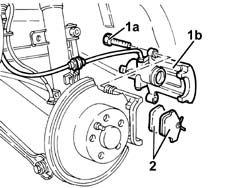
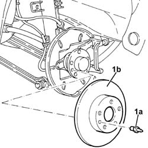
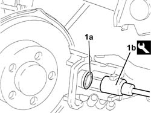

3310B48 rear brake disc - r r
- Path
- Procedures > 33 BRAKING SYSTEM > 3310 DISC BRAKES > 3310B REAR DISC BRAKES > 3310B48 rear brake disc - r r
- Kind
- repair procedure (removal / refitting; the operation number is the code)
- Applies to
- all engines; all production periods
- Interactive page
- https://sloeber94.github.io/elrnDB-a156/en/#/3238046
Applies to: all engines; all production periods
 Removing
Removing
 Refitting
RefittingPlace the car on the lifting bridge.
4450B11 WHEEL (one) rear - R.R.
1. Unscrew screws (1a) and move rear brake caliper (1b) away from bracket.
2. Remove rear brake pads.

Applies to: all engines; all production periods
1. Unscrew pin (1a) and remove rear brake disc (1b).

Applies to: all engines; all production periods
Refitting
RemovingMount rear brake disc and fix it with its pin to the couple.
 | Fastening | Component | Ø | Value (daNm) |
|---|---|---|---|---|
- | Pin | REAR BRAKE DISCS | M8 | 0.8 - 1.3 |
1. Compress rear brake caliper piston (1a) by the tool (1b) to ease brake caliper assembling.
 | Name | Country |
|---|---|---|
1b | Key | 1.822.108.000 |

Applies to: all engines; all production periods
Mount rear brake caliper including pads and fix it with its screws to the couple.
| Fastening | Component | Ø | Value (daNm) |
|---|---|---|---|---|
- | Bolt | REAR BRAKE CALIPER | M10 | 4.8 - 5.2 |
4450B11 WHEEL (one) rear - R.R.
Take the car off the lifting bridge.